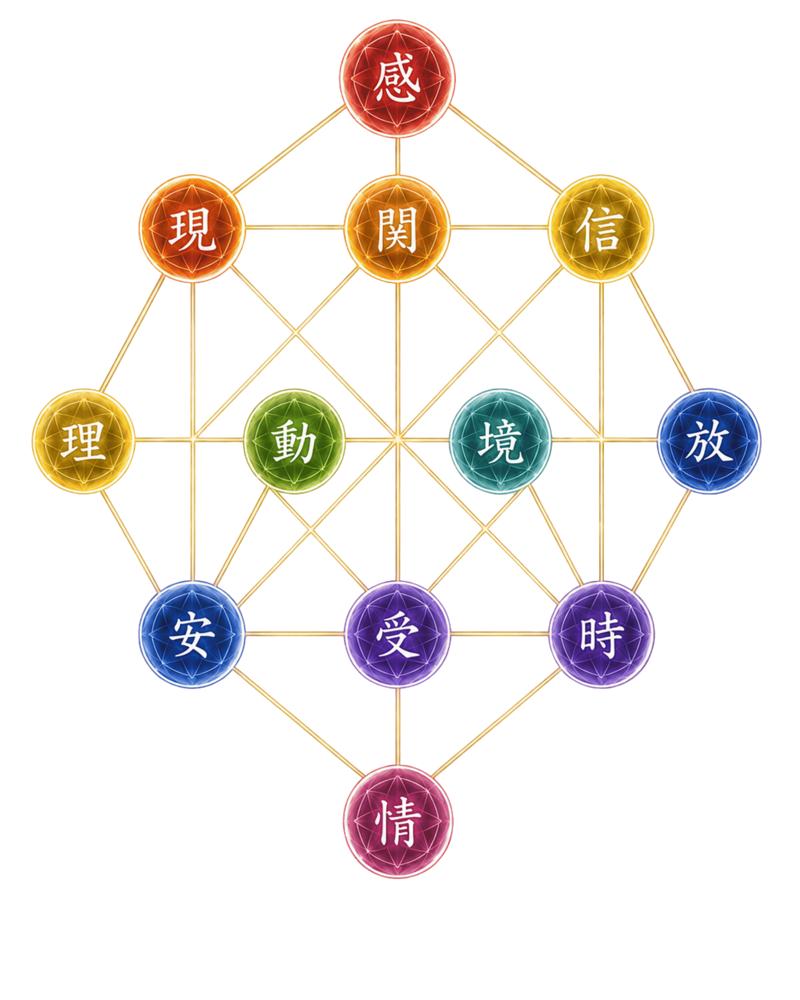

時光とは
時光とは、その人が生まれ持った性質から、無意識に使っている「回路」を見つける解析です。
時光では、考え方・感じ方・関わり方・行動の仕方など、その人が無意識に繰り返している心と行動の流れを「回路」と呼んでいます。
その回路は一人ひとり異なり、自分らしい力の使い方や、生き方の方向をつくっています。
しかし、回路の一部が滞ることで、「うまくいかない」「どうしたらいいのか分からない」と感じることがあります。
時光では、生まれ持った回路を12の座として表し、その配置と流れを目に見える形へと可視化しました。
また、それに加えて「花」が種から育ち、咲き、やがて枯れて種となる循環に例えることで、更にわかりやすく解説しています。
この時光の解説に加え、現在の心の状態や人生の流れをタロットカードと重ね合わせることで、今向き合っている課題と、流れを再び動かすための鍵を読み解いていきます。
この一連の解析を、「時光解析」と呼んでいます。
12の座
時光では、生まれ持った回路を12の座に分けて捉えています。
これは、性格を12種類に分類するためのものではありません。
私は個人的には「宇宙から与えられた立ち位置」のような気もしていますが、時光では現時点では「その人が無意識に持つ行動回路」を可視化するためのものです。
同じ座を持っていても、その組み合わせや流れ方は一人ひとり異なります。
この座は、生年月日、必要があれば名前の音の響きも加えた内容から独自の算出方法にて座を数値化しています。
時光は、誰かと比べるためではなく、その人自身が生まれ持った配置と流れを知るための解析です。

時光では、生まれ持った回路を「12の座」として可視化しています。
強く反応する座は、あなたを表す座ともいえます。
また、その座の中にも循環があります。１２座それぞれの中に巡る循環を、宝石カードに独自の座名を載せて紹介しています。
何故宝石なのか？というと、やはりその強く反応する座はあなたの輝きでもあります。その輝きこそ、宝石のように思えたのです。
宝石カードのカラーも、その座が対応するカラーになっています。
あなたが持つ座、その宝石がどんな宝石なのかも、ぜひその目で確認してください。
現在の流れを重ねる
時光では、生まれ持った回路を「12の座」として可視化し、現在の流れを重ねることで自分の状況や課題、解決策を読みます。
方法はタロットカードと持っている座の組み合わせとなりますが、タロットカードの読み方もまた、少し独自のものが入った内容になります。
しかしカードは、未来を決めるものではありません。今の自分を客観的に見つめ、自分自身で人生の舵を取るための道しるべとしてご利用していただければ幸いです。
光の通り道を読む
時光が見つけようとしているものは、あなたに足りないものではありません。
すでに自分の中にある力が、どの回路を通ろうとしているのか。何によって流れが止まり、何をきっかけに再び動き出すのか。その道筋を見つけていきます。
人は本来、自分が持っている座にいることで、自然とその人らしさを発揮します。
自分が自分であること、そのままで十分なのです。
時光は、自分が本来いるべき位置を思い出すための解析です。
時光が大切にしていること
時光では、結果を断定していません。
今見えている流れは、あなた自身が選び、動くことで変わっていきます。
時光解析は、答えを決めるものではなく、自分の状態を知り、これからの方向を考えるための地図となるものです。
時光で読み解くこと
結果は、良い未来や悪い未来を告げるものではありません。今の自分を知り、本来の力を確認するための手がかりです。
無料解析について
時光解析の理論と解析内容は、独自に構築・検証したものです。AIは、その解析内容をもとに結果を自動生成しています。
一からAIが自由に文章を作成しているものではなく、あらかじめ構築した算定方法と解析データに基づいて、あなたの結果を表示しています。
より詳しい読み解きでは、現在の流れをタロットカードと重ね合わせながら、一人ひとりの状況に合わせて丁寧に読み解く個人鑑定をご用意しています。